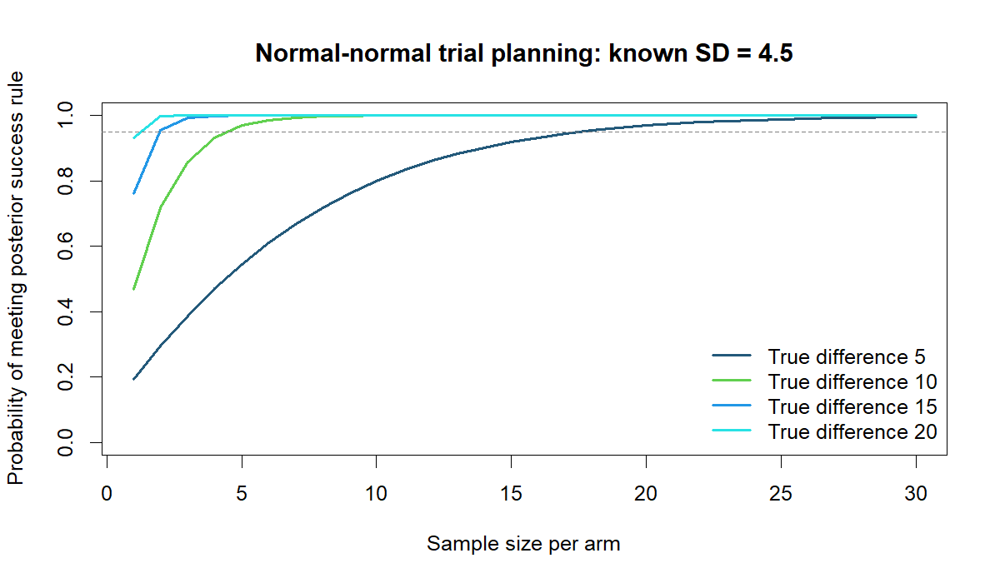

Question
How do effect size and the posterior decision threshold change the required sample size in a hypothetical two-arm LDL trial?
Findings
With known SD 4.5, a diffuse N(0, 100²) effect prior, 95% target success probability, and posterior P(effect > 0) > 0.95, required n per arm was 18, 5, 2, and 2 for effects 5, 10, 15, and 20. A matched one-sided alpha 0.05 calculation gave the same rounded sizes. Tightening both thresholds to 0.975 / alpha 0.025 gave 22, 6, 3, and 2.

Methods and revision
Reconciled the report’s 80% wording with the code’s 95% target, matched decision thresholds across approaches, replaced noisy grid estimates with exact probabilities, and added seeded Monte Carlo checks. Unattained targets now return NA rather than an invalid minimum.
Limits
This is a hypothetical known-variance design, not a clinical trial recommendation. Fixed-true-effect success probability is not assurance integrated over a design prior. Extremely small calculated sample sizes reflect the strong modeling assumptions; no practical minimum, dropout, or operational constraints are included.
Run the analysis
Rscript analysis.R resultsNo external data are required. All inputs are explicitly hypothetical design parameters in analysis.R. The optional design_assurance function integrates over a separate design prior; the main table conditions on fixed true effects.